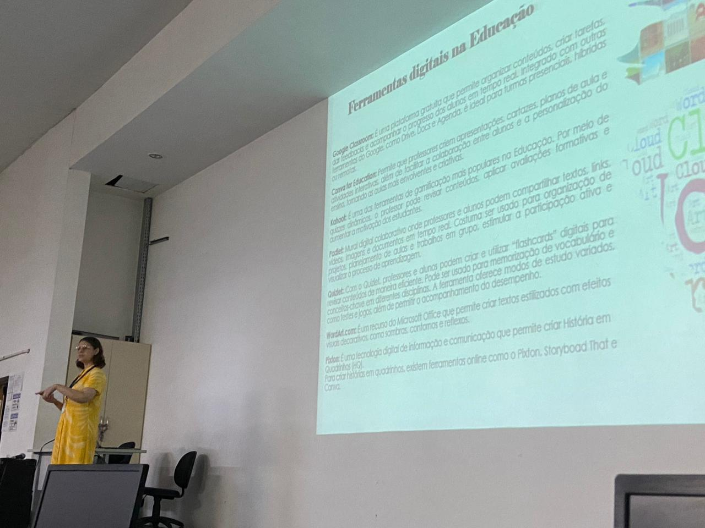
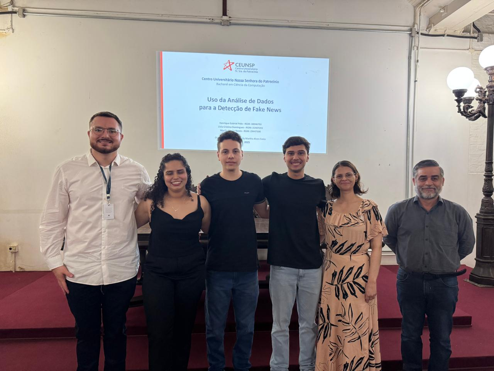
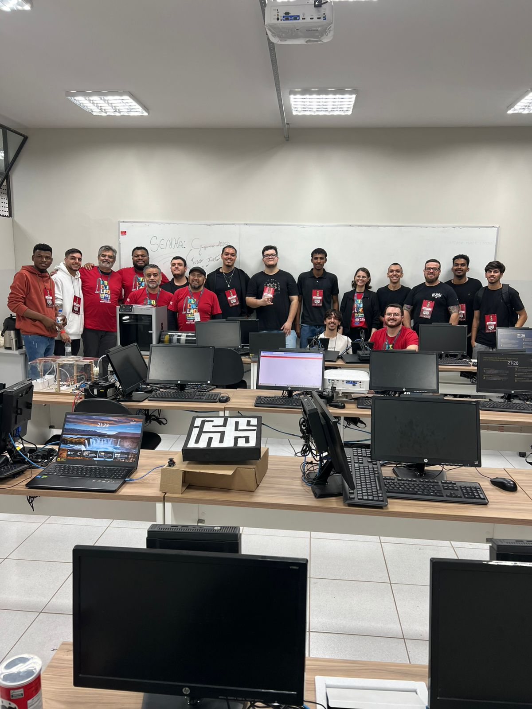
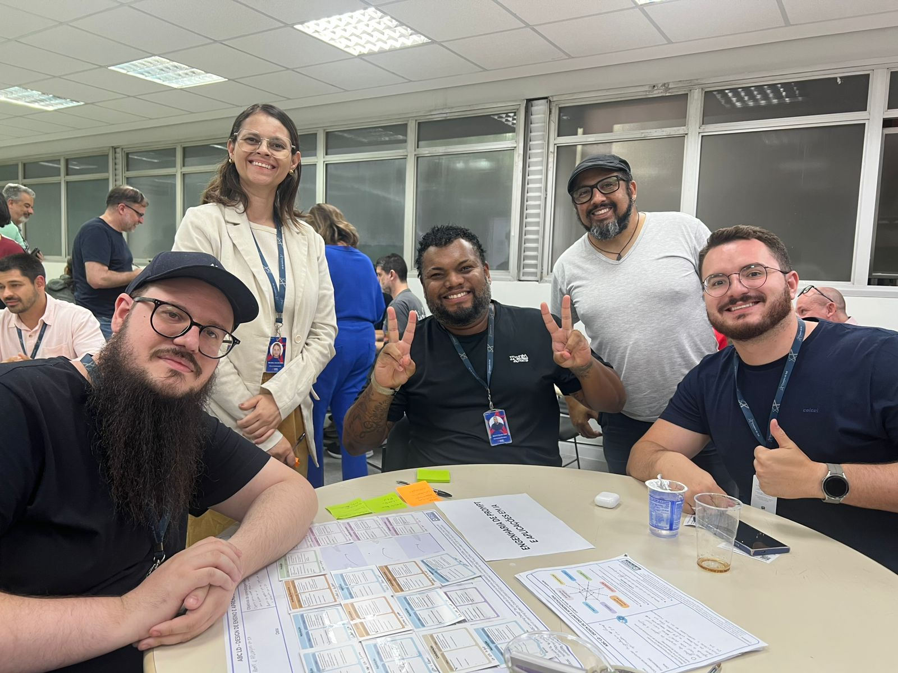
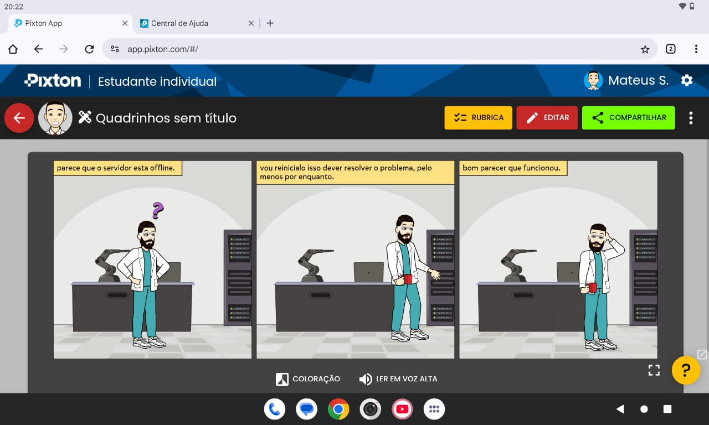
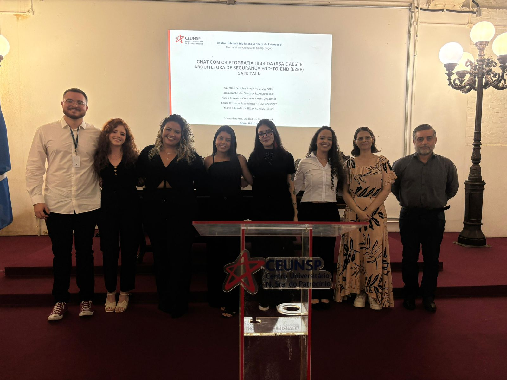

Oficina
Semana da Tecnologia
Registro de uma oficina realizada durante a Semana da Tecnologia, com atividades voltadas ao uso de tecnologias digitais no ensino.
Registros da nossa trajetória
Oficinas, formações, bancas, palestras e momentos vividos no CEUNSP, além da equipe responsável pelo desenvolvimento deste Portfólio Digital.
Momentos que fazem parte do curso
Alguns registros de atividades acadêmicas, encontros com professores, apresentações, oficinas e ações desenvolvidas ao longo da formação.

Registro de uma oficina realizada durante a Semana da Tecnologia, com atividades voltadas ao uso de tecnologias digitais no ensino.

Apresentação de Trabalho de Conclusão de Curso com foco no uso da análise de dados para detecção de fake news.

Registro do Mochilão 2025, reunindo professores e estudantes em atividades e vivências do curso.

formação de professores 2026/01 em São Paulo

Exemplo de atividade utilizando recursos digitais, como o Pixton, para produção de conteúdos e experiências de aprendizagem.

Registro de apresentação de Trabalho de Conclusão de Curso envolvendo criptografia híbrida e segurança de comunicação.
Quem construiu este portfólio
Um espaço para apresentar a turma, registrar nossos momentos e destacar a equipe responsável pela parte tecnológica do portfólio.
Turma de Análise e Desenvolvimento de Sistemas
Somos alunos do CEUNSP e este Portfólio Digital foi criado para reunir projetos acadêmicos, experiências, eventos e registros que representam a trajetória da turma. A proposta é valorizar os trabalhos realizados pelos estudantes e deixar o conteúdo organizado de forma simples, visual e acessível.
Equipe de desenvolvimento do Portfólio Digital